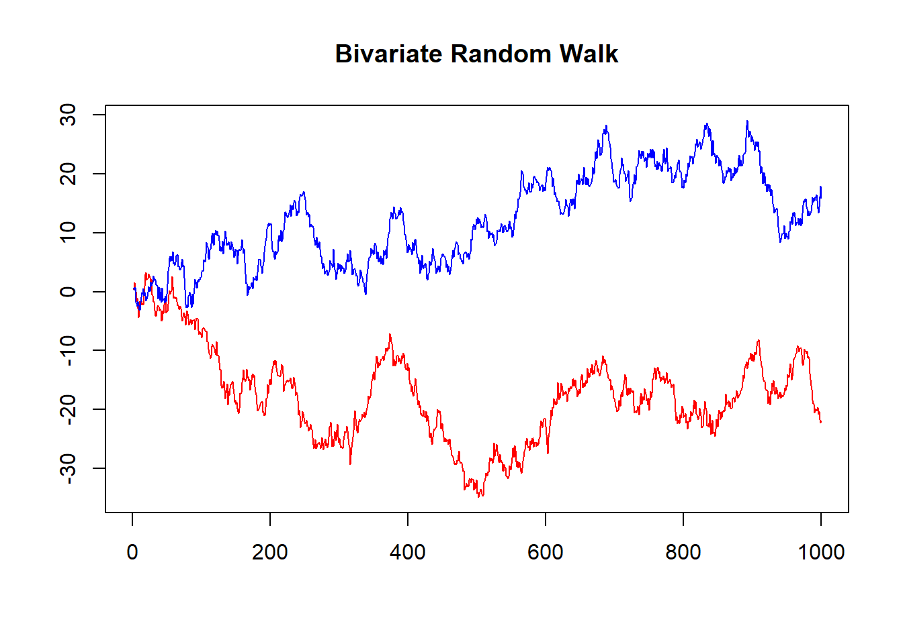

Predicting Stock Index Realised Volatility using Bayesian VARs
Abstract: This research report explores whether VARs and Bayesian VARs are able to predict realised volatility in equity index markets.
Keywords. BVARs, Realised Volatility, Stock Indices, SP500
Research Proposal
Objective and Motivation
This paper seeks to examine the effectiveness of Bayesian VARs as a method for forecasting realised volatility (RV) in equity markets. It will explore whether various Bayesian estimation techniques applied to vector autoregression can accurately predict RV. The accurate prediction of market volatility has many applications in Finance, including the pricing of derivatives and the estimation of risk measures such as Value at Risk.
Data
The models will be applied to daily data on realised variances occurring on a group of global stock indices. Stock indices serve as gauges of overall equity market performance and are generally categorised by country. For this analysis we will focus on 10 major global indices, the SPX, DJI, FTSE, GDAXI, FCHI, STOXX50E, N225, AORD, HSI and the STI.
| Code | Index Name | Region |
|---|---|---|
| SPX | S&P 500 | US |
| DJI | Dow Jones | US |
| FTSE | FTSE 100 | UK |
| GDAXI | DAX | Germany |
| FCHI | CAC40 | France |
| STOXX50E | EURO STOXX | Europe |
| N225 | NIKKEI 225 | Japan |
| AORD | All Ordinaries | Australia |
| HSI | Hang Seng | Hong Kong |
| STI | Straits Times | Singapore |
Realised variance is a measure of historical volatility occuring in financial time series constructed from intraday high frequency return data.
Realised variance is defined as the sum of squared returns over specific period:
\[\begin{align} Realised\,Variance = \sum r^2_t \end{align}\]Where \(p_t\) denotes the price of an asset at time t and \(r_t\) is defined as the log return over a predetermined interval, for example 5 minutes:
\[\begin{align} r_t = log(p_t / p_{t-1}) \end{align}\]Realised volatility RV is then computed as the square root of the realised variance.
\[\begin{align} RV = \sqrt{\sum r^2_t} \end{align}\]The RV data is sourced from the Oxford Man Realised Library which provides a number of precalculated volatility metrics, including RV on stock indices spanning multiple years. The data set has been employed widely in the literatur for empirical volatility studies, such as by Dutta and Das (2022) and Brandi and Di Matteo (2022). For this analysis we will utilise the 5 minute RV measure provided in the dataset for each of our 10 indices. The data ranges between January 2000 and June 2018.
Figure 1. Time series plots of original values
As each of the series follow a similar general pattern only four of the ten indices are plotted for visualisation above. From a visual inspection of the examples above, we can see that realised volatility appears highly non-stationary. There are clear spikes in RV over certain periods in time. These periods of high volatility appear to persist for some time before subsiding, which provides evidence in favour of an autoregressive model specification.
Furthermore, spikes in RV appear to happen around the same times across markets. This provides our main motivation for modelling RV via a VAR specification whereby we can seek to capture the dynamic interrelationships between global equity markets.
For ease of modelling and in order to bring the data closer to normality we will work with the log transformed variable \(log(rv_t)\).
Figure 2. Time series plots of log transformed values

Conducting Augmented Dickey-Fuller tests on the log transformed RVs to test for stationarity results in the rejection of the null hypothesis of non-stationarity for all series at the 0.05 level. This implies stationarity in the log transformed variables.
ADF Test Results for Log Transformed 5 Minute RVs
| Index | P Value |
|---|---|
| .SPX | 0.01 |
| .DJI | 0.01 |
| .FTSE | 0.01 |
| .GDAXI | 0.01 |
| .FCHI | 0.01 |
| .STOXX50E | 0.01 |
| .N225 | 0.01 |
| .AORD | 0.01 |
| .HSI | 0.01 |
| .STI | 0.01 |
Model
The model will follow the standard \(VAR(p)\) setup as follows:
\[\begin{align} rv_t &= \mu_0 + A_1 rv_{t-1} + \dots + A_p rv_{t-p} + \epsilon_t\\ \epsilon_t | RV_{t-1} &\sim iidN_N(0_N, \Sigma) \end{align}\]Where \(rv_t\) is a vector of log transformed realised variances for our \(N=10\) stock indices on day \(t\). The \(A_i\) matrices are \(N\times N\) matrices of the autoregressive slope parameters.
The error term vector \(\epsilon_t\) given the data up to \(t-1\) is assumed to be iid multivariate normally distributed of dimension \(N=10\), with mean \(0_N\) and covariance matrix \(\Sigma\).
Bayesian estimation techniques will be then utilised in conjunction with a number of suitably chosen prior specifications in order to estimate competing models and compute 1 day ahead RV forecasts across all indices. The predictions will be made out of sample and the accuracy of the forecasts will then be assessed according to their root mean squared errors RMSE, given by:
\[\begin{align} RMSE = \sqrt{\sum(\hat{rv_i} - rv_i )^2/n} \end{align}\]Assessment of prediction accuracy via the RMSEs will facilitate comparison of various different model specifications, such as the incorporation of different prior distributions and differing assumptions about the parameters of those distributions.
The significance of being able to reliably forecast market volatility is primarily seen in the context of financial asset pricing. Volatility of the underlying asset is one of the crucial inputs required in options pricing. With reliable forecasts of stock index volatility one can assess the degree to which options quoted in the market are under or over estimating volatility relative to what is indicated by the historical realised dynamics.
Modelling Framework
Estimation Procedure for the Baseline Model
The baseline model is as follows:
\[\begin{align} Y &= XA + U \\ Y|X,A,\Sigma &\sim MN_{T \times N} (XA, \Sigma, I_T) \end{align}\]This implies the following form for the kernel of the likelihood function:
\[\begin{align} L(A,\Sigma|Y,X) \propto det(\Sigma)^{-\frac{T}{2}}exp(-\frac{1}{2}tr[\Sigma^{-1}(Y-XA)'(Y-XA)]) \end{align}\]We assume the usual matrix normal and inverse Wishart natural conjugate priors for \(A\) and \(\Sigma\):
\[\begin{align} p(A,\Sigma) &= p(A|\Sigma)p(\Sigma) \\ A|\Sigma &\sim MN_{K \times N}(\underline{A},\Sigma,\underline{V}) \\ \Sigma &\sim IW_N(\underline{S},\underline{\nu}) \end{align}\]The posterior distribution is given by the product of the likelihood and the priors.
\[\begin{align} p(A,\Sigma|Y,X) &\propto \det(\Sigma)^{-\frac{T}{2}} \\ &\times exp(-\frac{1}{2}tr[\Sigma^{-1}(Y-XA)'(Y-XA)]) \\ &\times \det(\Sigma)^{-\frac{N+K+\underline{v}+1}{2}} \\ &\times exp(-\frac{1}{2}tr[\Sigma^{-1}(A-\underline{A})'\underline(V)^{-1}(A-\underline{A})]) \\ &\times exp(-\frac{1}{2}tr[\Sigma^{-1}\underline{S}]) \end{align}\]Combining the terms and completing the squares for the terms within the square brackets yields the following posterior distributions for \(A\) and \(\Sigma\):
\[\begin{align} p(A|Y,X,\Sigma) &= MN_{K \times N}(\bar{A}, \Sigma, \bar{V}) \\ p(\Sigma|Y,X) &= IW_N(\bar{S},\bar{\nu}) \\ \\ \bar{V} &= (X'X + \underline{V}^{-1})^{-1} \\ \bar{A} &= \bar{V}(X'Y + \underline{V}^{-1}\underline{A}) \\ \bar{\nu} &= T + \underline{\nu} \\ \bar{S} &= \underline{S} + Y'Y + \underline{A}'\underline{V}^{-1}\underline{A} - \bar{A}'\bar{V}^{-1}\bar{A} \\ \end{align}\]Since the above fully characterises the joint posterior distribution we can then sample from these directly using a suitably chosen prior. A common prior for unit root nonstationary variables is the ‘Minnesota Prior’, which assumes that the variables follow a random walk. The prior mean \(\underline{A}\) is set to an identity matrix for the first lag and zeroes elsewhere. Meanwhile the column specific covariance matrix for A is set according to two shrinkage hyperparameters \(\kappa_1\) and \(\kappa_2\) which determine the level of shrinkage around the prior mean.
\[\begin{align} \underline{A} &= \begin{bmatrix} 0_{N \times 1} & I_N & 0_{N \times (p-1)N} \end{bmatrix} \\ \underline{V} &= diag( \begin{bmatrix} \kappa_2 & \kappa_1(p^{-2}\otimes I_N') \end{bmatrix}) \end{align}\]The estimation routine can be implemented in a function in R as follows:
Posterior Estimation Function in R
get_posteriors = function(S, Y, X, priors) {
N = ncol(Y)
A.prior = priors[[1]]
V.prior = priors[[2]]
S.prior = priors[[3]]
nu.prior = priors[[4]]
# normal-inverse Wishart posterior parameters
############################################################
V.bar.inv = t(X)%*%X + diag(1/diag(V.prior))
V.bar = solve(V.bar.inv)
A.bar = V.bar%*%(t(X)%*%Y + diag(1/diag(V.prior))%*%A.prior)
nu.bar = nrow(Y) + nu.prior
S.bar = S.prior + t(Y)%*%Y + t(A.prior)%*%diag(1/diag(V.prior))%*%A.prior - t(A.bar)%*%V.bar.inv%*%A.bar
S.bar.inv = solve(S.bar)
# posterior draws
############################################################
Sigma.posterior = rWishart(S, df=nu.bar, Sigma=S.bar.inv)
Sigma.posterior = apply(Sigma.posterior,3,solve)
Sigma.posterior = array(Sigma.posterior,c(N,N,S))
A.posterior = array(rnorm(prod(c(dim(A.bar),S))),c(dim(A.bar),S))
L = t(chol(V.bar))
for (s in 1:S){
A.posterior[,,s]= A.bar + L%*%A.posterior[,,s]%*%chol(Sigma.posterior[,,s])
}
return(list(A.posterior, Sigma.posterior))
}For demonstrative purposes the above code can be applied to simulated data generated from a bivariate random walk.

The estimation routine utilising a Minnesota Prior specification is then implemented as follows:
p=1
N=2
Y_ext = (rw_data[(p+1):nrow(rw_data),c(1,2)]) #removing first p observations and taking logs
X_ext = matrix(1,nrow(Y_ext),1) #Creating X matrix
for (i in 1:p){
X_ext = cbind(X_ext, (rw_data[(p+1):nrow(rw_data)-i,c(1,2)]))
}
Y_ext = as.matrix(Y_ext)
X_ext = as.matrix(X_ext)
A.hat = solve(t(X_ext)%*%X_ext)%*%t(X_ext)%*%Y_ext
Sigma.hat = t(Y_ext-X_ext%*%A.hat)%*%(Y_ext-X_ext%*%A.hat)/nrow(Y_ext)
kappa.1 = 0.02^2
kappa.2 = 100
A.pri = matrix(0, (1+p*N), N)
A.pri[2:3,] = diag(2)
V.pri = diag(c(kappa.2,kappa.1*((1:p)^(-2))%x%rep(1,N)))
S.pri = diag(diag(Sigma.hat))
nu.pri = N+1
pris = list(A.pri, V.pri, S.pri, nu.pri)
res = get_posteriors(10000, Y_ext, X_ext, pris)
round(apply(res[[1]],1:2,mean),2) #A posterior mean [,1] [,2]
[1,] 0.08 0.05
[2,] 1.00 0.00
[3,] 0.00 1.00round(apply(res[[2]],1:2,mean),2) #Sigma posterior mean [,1] [,2]
[1,] 1.00 0.03
[2,] 0.03 1.04As shown above the estimated parameter means closely match the expected values for the data generating process.
Model Extension: T-Distributed Errors
An alternative specification for the model is to relax the assumption of normally distributed errors. A T-Distribution more closely mirrors the leptokurtosis commonly seen in financial time series and as such it is a good candidate for our model of index volatility.
\[\begin{align} U_t &\sim t_N(0, \Sigma, \nu) \end{align}\]Following the methodology of Geweke 1993, a T-distribution for the error term can be represented by a scale mixture of normal distributions with a scaling term \(\lambda\) which is Inverse Gamma 2 distributed.
\[\begin{align} U|\lambda &\sim MN(0, \Sigma, \lambda I_t) \\ \lambda &\sim IG2( s_{\lambda}, \nu_{\lambda}) \end{align}\]Under this specification, the kernel of the likelihood function takes the following form:
\[\begin{align} L(A,\Sigma,\Lambda|Y,X) &\propto \det(\Sigma)^{-\frac{T}{2}} \det(\lambda I_T)^{-\frac{N}{2}} exp(-\frac{1}{2} tr[\Sigma^{-1} (Y-XA)' (\lambda I_T)^{-1} (Y-XA) ]) \end{align}\]The posteriors for \(A\), \(\Sigma\) and \(\lambda\) can then be derived using the likelihood and the prior distributions. The natural conjugacy of \(A\) and \(\Sigma\) is preserved and so the conditional posterior \(p(A,\Sigma|Y,X)\) can be derived as follows.
\[\begin{align} p(A,\Sigma|Y,X) &\propto L(A,\Sigma,\lambda|Y,X)p(A,\Sigma) \\ \\ &= \det(\Sigma)^{-\frac{T}{2}} \det(\lambda I_T)^{-\frac{N}{2}} exp(-\frac{1}{2} tr[\Sigma^{-1} (Y-XA)' (\lambda I_T)^{-1} (Y-XA) ]) \\ &\times \det(\Sigma)^{-\frac{N+k+\underline{\nu}+1}{2}} exp(-\frac{1}{2}tr[\Sigma^{-1}(A-\underline{A})'(\underline{V})^{-1}(A-\underline{A})]) \\ &\times exp(-\frac{1}{2}tr[\Sigma^{-1}\underline{S}]) \\ \\ &= \det(\Sigma)^{-\frac{T+N+K+\underline{\nu}+1}{2}} \det(\lambda I_T)^{-\frac{N}{2}} \\ &\times exp(-\frac{1}{2} tr[\Sigma^{-1}(Y'(\lambda I_T)^{-1}Y - 2A'X'(\lambda I_T)^{-1}Y + A'X'(\lambda I_T)^{-1}XA + A'\underline{V}^{-1}A -2A'\underline{V}^{-1}\underline{A} + \underline{A}'\underline{V}^{-1}\underline{A} + \underline{S})]) \end{align}\]Expanding the terms inside the square brackets, followed by completing the squares, allows the above expression to be rearranged in the form of a Matrix-variate Normal Inverse Wishart kernel.
\[\begin{align} p(A,\Sigma|Y,X) &\sim MNIW(\bar{A},\bar{V},\bar{S},\bar{\nu}) \\ \\ \bar{V} &= (X'(\lambda I_T)^{-1}X + \underline{V}^{-1})^{-1} \\ \bar{A} &= \bar{V}(X'(\lambda I_T)^{-1}Y + \underline{V}^{-1}\underline{A}) \\ \bar{S} &= Y'(\lambda I_T)^{-1}Y + \underline{A}'\underline{V}^{-1}\underline{A} + \underline{S} - \bar{A}'\bar{V}^{-1}\bar{A} \\ \bar{\nu} &= T + \underline{\nu} \end{align}\]The posterior distribution for \(\lambda\) is then derived as follows:
\[\begin{align} p(\lambda|Y,X,A,\Sigma) &\propto L(A,\Sigma,\lambda|Y,X)p(\lambda) \\ \\ &= \det(\Sigma)^{-\frac{T}{2}} \det(\lambda I_T)^{-\frac{N}{2}} exp(-\frac{1}{2} tr[\Sigma^{-1} (Y-XA)' (\lambda I_T)^{-1} (Y-XA) ]) \\ &\times \lambda^{-\frac{\underline{\nu_{\lambda}}+2}{2}} exp(-\frac{1}{2}\frac{\underline{s_{\lambda}}}{\lambda}) \\ \\ &= \lambda^{-\frac{TN}{2}} exp(-\frac{1}{2}\frac{1}{\lambda} tr[\Sigma^{-1}(Y-XA)'(Y-XA)]) \\ &\times \lambda^{-\frac{\underline{\nu_{\lambda}}+2}{2}} exp(-\frac{1}{2}\frac{\underline{s_{\lambda}}}{\lambda}) \det(\Sigma)^{-\frac{T}{2}}\det(I_T)^{-\frac{N}{2}} \\ \\ &= \lambda^{-\frac{TN+\underline{\nu_{\lambda}}+2}{2}} exp(-\frac{1}{2}\frac{1}{\lambda} [tr[\Sigma^{-1}(Y-XA)'(Y-XA)] +\underline{s_{\lambda}}]) \det(\Sigma)^{-\frac{T}{2}} \\ \\ \end{align}\]As such,
\[\begin{align} \lambda|Y,A,\Sigma &\sim IG2(\bar{s_{\lambda}},\bar{\nu_{\lambda}}) \\ \bar{s_{\lambda}} &= tr[\Sigma^{-1}(Y-XA)'(Y-XA)] + \underline{s_{\lambda}} \\ \bar{\nu_{\lambda}} &= TN + \underline{\nu_{\lambda}} \end{align}\]We can then sample sequentially from the conditional posterior distributions via a Gibbs Sampler. In order to do so we initalise each of the parameters at arbitrary starting values. We then proceed accordingly:
- Draw \(\Sigma^{(i)}\) from the \(IW(\bar{S},\bar{\nu})\) distribution
- Draw \(A^{(i)}\) from the \(MN(\bar{A},\Sigma^{(i)}, \bar{V})\) distribution
- Draw \(\lambda^{(i)}\) from \(IG2(\bar{s_{\lambda}},\bar{\nu_{\lambda}})\)
We repeat the above steps for the desired amount of iterations and collect the parameter draws in an array. We can then scrutinise the characteristics of the posterior densities using these draws.
Gibbs Sampler code for t-distributed errors:
#Setting priors and initialising parameters
A.gprior = matrix(0, 3, 2)
A_V.gprior = diag(1,3)
Sigma_s.gprior = diag(2)
Sigma_v.gprior = 3
lambda_s.gprior = 1000
lambda_v.gprior = 1000
lambda.draw = lambda_s.gprior/rchisq(1, lambda_v.gprior)
S = 1000
Sigma.posterior.draws = array(NA, c(2,2,S))
A.posterior.draws = array(NA, c(3,2,S))
lambda.posterior.draws = rep(NA,S)
for (s in 1:S){
lambda.gprior.diag = diag(lambda.draw, nrow(Y_ext))
A_V.posterior = solve(t(X_ext)%*%diag(1/diag(lambda.gprior.diag))%*%X_ext + solve(A_V.gprior))
A.posterior = A_V.posterior%*%(t(X_ext)%*%diag(1/diag(lambda.gprior.diag))%*%Y_ext + solve(A_V.gprior)%*%A.gprior)
Sigma_s.posterior = t(Y_ext)%*%diag(1/diag(lambda.gprior.diag))%*%Y_ext + t(A.gprior)%*%solve(A_V.gprior)%*%A.gprior + Sigma_s.gprior - t(A.posterior)%*%solve(A_V.posterior)%*%A.posterior
Sigma_v.posterior = nrow(Y_ext) + Sigma_v.gprior
Sigma.inv.draw = rWishart(1, Sigma_v.posterior, solve(Sigma_s.posterior))[,,1]
Sigma.posterior.draws[,,s] = solve(Sigma.inv.draw)
A.posterior.draws[,,s] = matrix(mvtnorm::rmvnorm(1, mean=as.vector(A.posterior), sigma=Sigma.posterior.draws[,,s]%x%A_V.posterior), ncol=2)
lambda_s.posterior = sum(diag(Sigma.inv.draw%*%t(Y_ext - X_ext%*%A.posterior.draws[,,s])%*%(Y_ext - X_ext%*%A.posterior.draws[,,s]))) + lambda_s.gprior
lambda_v.posterior = nrow(Y_ext)*2 + lambda_v.gprior
lambda.draw = lambda_s.posterior / rchisq(1, lambda_v.posterior)
lambda.posterior.draws[s] = lambda.draw
}
round(apply(A.posterior.draws, 1:2, mean),2) [,1] [,2]
[1,] 0.07 0.05
[2,] 1.00 0.00
[3,] 0.00 1.00round(apply(Sigma.posterior.draws, 1:2, mean),2) [,1] [,2]
[1,] 1.00 0.03
[2,] 0.03 1.03round(mean(lambda.posterior.draws),2)[1] 1.01As can be seen, when the extended model estimation routine is applied to the simulated bivariate random walk data, the estimates of \(A\) and \(\Sigma\) again match the true parameter values closely.